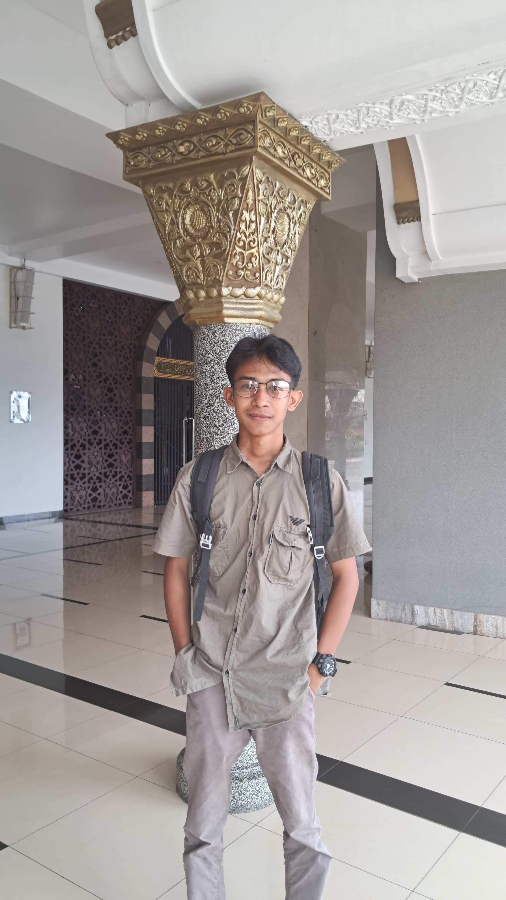

Biodata Saya
Profil

RISKY DARLIS
STATISTIKA
UNIVERSITAS NEGERI PADANG
Latar Belakang
ini masih dalam tahap pengembangan
Jenjang Pendidikan
- Sekolah Dasar - SDN 01 Lubuk Alung, (tahun 2011-2016.)
- Sekolah menengah pertama - SMP N 1 LUBUK ALUNG (tahun 2017-2020.)
- sekolah menengah atas - SMK N 1 PARIAMAN (tahun 2021-2023.)
- Sarjana - UNIVERSITAS NEGERI PADANG (tahun 2023-2024)
- Coding Sky University - UNP 2013-2019 (SINCE 2018-2024)